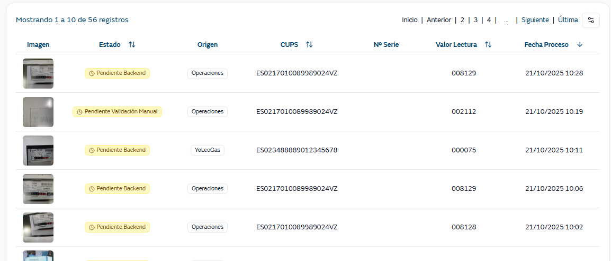

Muestra un listado de las lecturas/imágenes de contadores enviadas desde la app YoLeoGas, ya sea directamente o a través de su integración con la app de W&T.
Se pueden buscar las lecturas por:

Imagen: Miniatura de la imagen del contador (100px)
Estado: Estado actual del procesamiento con tooltip de errores
Origen: Canal por el que se ha enviado la lectura
CUPS: Código del punto de suministro
Nº Serie: Número de serie del contador
Valor Lectura: Valor final de la lectura tras el proceso
Fecha proceso: Fecha y hora en la que se ha procesado la lectura por el OCR del servidor
Existirá una opción para seleccionar los campos que se visualizan en el listado, pudiendo agregar.
Nombre contador
Valor de lectura desde móvil
Valor de lectura desde servidor
Valor de lectura que ha introducido manualmente el usuario
Confianza de la lectura móvil
Confianza de la lectura servidor
Plataforma → valores Android o IOS. Versión del dispositivo desde el que se ha realizado la lectura
Modelo de teléfono → dispositivo móvil desde el que se ha realizado la lectura . Ejemplo Xiaomi 24040RN64Y, iPhone17,5
Versión de la aplicación → versión de la aplicación móvil Yo Leo Gas desde la que se ha realizado la lectura. Ejemplo 19.4
Fecha de envío a Backend → fecha en la que se ha realizado la lectura
Al lanzar la búsqueda, se recuperan todas los registros de la entidad IMAGE que cumplen los filtros indicados, teniendo en cuenta que:
CUPS → se corresponde con prf_cups de la entidad PROFILE. La entidad PROFILE se relaciona con la entidad IMAGE a través de prf_id, que está en ambas entidades
Origen lectura → se corresponde con el campo image_input_channel de la entidad IMAGE y la relación entres sus valores y los que se muestran es:
ENTIDAD IMAGE | ORIGEN EN PANTALLA |
MOBILE | YoLeoGas |
MOBILEPROFILE | YoLeoGas |
HERMES | Operaciones |
Estado → se corresponde con el campo image_status_stage de la entidad IMAGE y la relación entre sus valores y los que se muestran es:
ENTIDAD IMAGE | ESTADO EN PANTALLA |
PENDING_PROFILE_VALIDATION | Pendiente validación perfil |
PENDING_SERVER_PROCESSING | Pendiente OCR |
SERVER_PROCESSING | Procesando OCR |
PENDING_MANUAL_PROCESSING | Pendiente validación manual |
PENDING_SGC_PROCESSING |
|
SEND_TO_SGC |
|
PROCESSED_OK | Procesada |
DISCARDED | Descartada |
PROCESSED_HERMES | Procesada |
Recepción Desde/Hasta → se corresponde con image_date_processed_mobile de la entidad IMAGE
Nº Serie → se corresponde con prf_meter_serial_value_server_id o prf_meter_serial_value_manual (si se ha informado) de la entidad PROFILE
Valor Lectura → se corresponde con image_meter_reading_value_server o image_meter_reading_value_manual (si se ha informado) de la entidad IMAGE
Fecha proceso → se corresponde con image_date_processed_server_reading_start de la entidad IMAGE
Nombre contador → se corresponde con prf_name de la entidad PROFILE
Valor de lectura desde móvil → se corresponde con image_meter_reading_value_mobil de la entidad IMAGE
Valor de lectura desde servidor→ se corresponde con image_meter_reading_value_server de la entidad IMAGE
Valor de lectura que ha introducido manualmente el usuario→ se corresponde con image_meter_reading_value_manual de la entidad IMAGE
Confianza de la lectura móvil→ se corresponde con image_meter_reading_confidence_mobile de la entidad IMAGE
Confianza de la lectura servidor→ se corresponde con image_meter_reading_confidence_serverde la entidad IMAGE
Plataforma → se corresponde con platform de la entidad IMAGE
Modelo de teléfono → se corresponde con phone_model de la entidad IMAGE
Versión de la aplicación → se corresponde con app_version de la entidad IMAGE
Fecha de envío a Backend → fse corresponde con image_date_processed_mobile de la entidad IMAGE
Además, en la pantalla el usuario puede realizar las siguientes acciones:
Limpiar: Resetear todos los filtros
Paginación: Navegar entre páginas (Primera, Anterior, Siguiente, Última)
Ver imagen: Click para ver imagen completa
Modificación de columnas: Añadir / Eliminar campos a la visualización